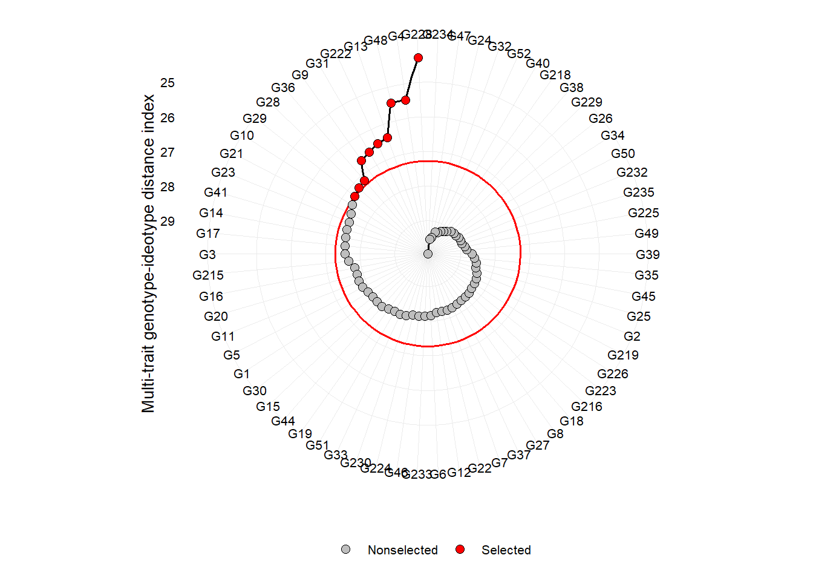
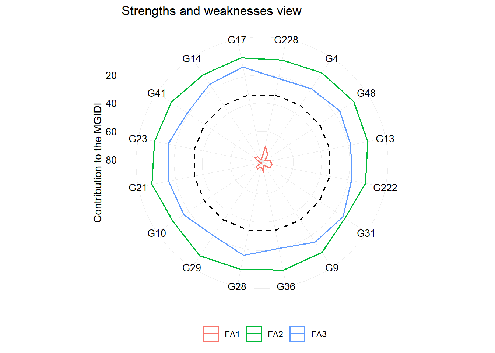
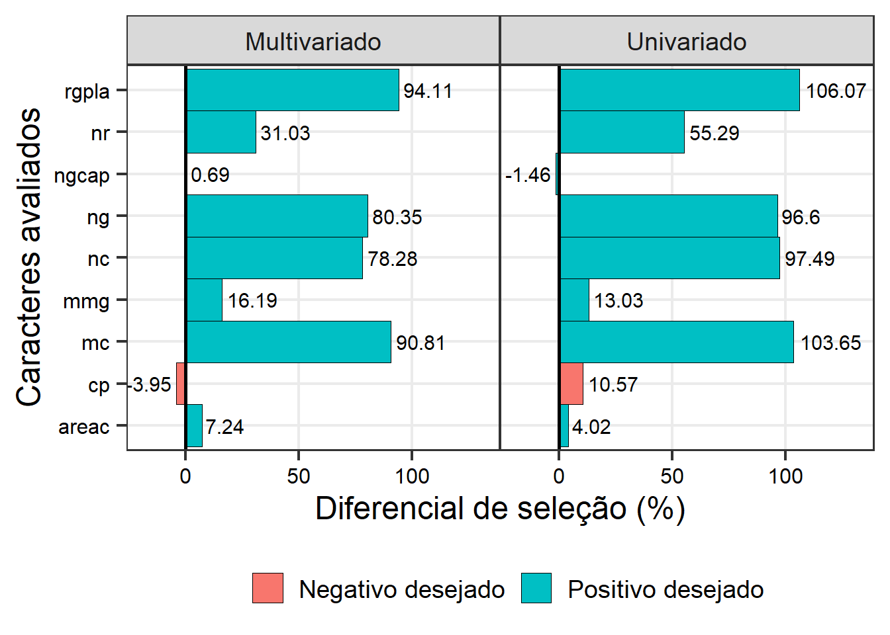
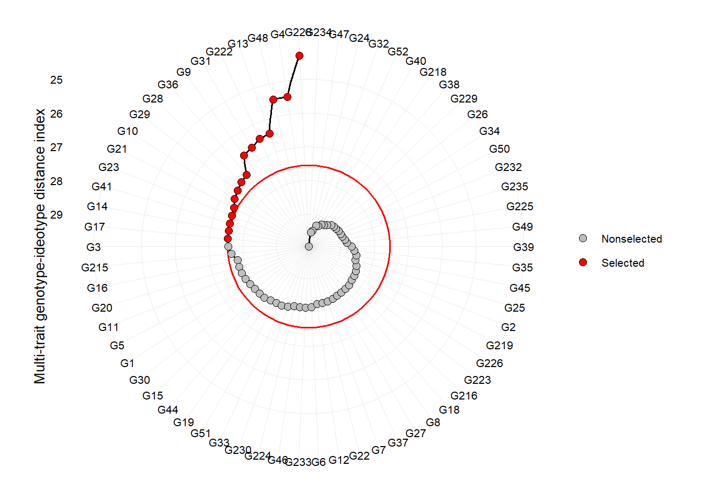
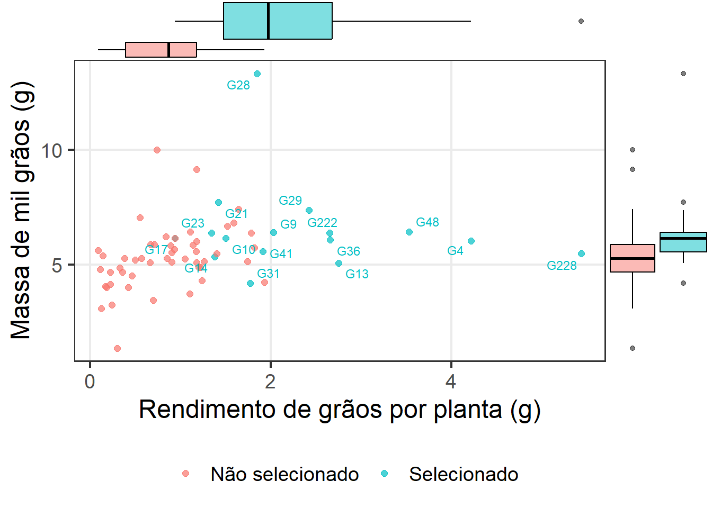

03: Seleção multivariada de genótipos de linho usando o índice MGIDI
1 Pacotes
2 Dados
3 Índice MGIDI
mod_mgidi <-
df |>
mgidi(ideotype = c("l, h, h, h, h, h, h, h, h"),
weights = c(2, 5, 5, 1, 1, 5, 5, 2, 2),
SI = 25)
##
## -------------------------------------------------------------------------------
## Principal Component Analysis
## -------------------------------------------------------------------------------
## # A tibble: 9 × 4
## PC Eigenvalues `Variance (%)` `Cum. variance (%)`
## <chr> <dbl> <dbl> <dbl>
## 1 PC1 4.43 49.2 49.2
## 2 PC2 1.72 19.1 68.3
## 3 PC3 1.03 11.4 79.8
## 4 PC4 0.94 10.4 90.2
## 5 PC5 0.62 6.86 97.1
## 6 PC6 0.23 2.56 99.6
## 7 PC7 0.02 0.24 99.9
## 8 PC8 0.01 0.11 100.
## 9 PC9 0 0.02 100
## -------------------------------------------------------------------------------
## Factor Analysis - factorial loadings after rotation-
## -------------------------------------------------------------------------------
## # A tibble: 9 × 6
## VAR FA1 FA2 FA3 Communality Uniquenesses
## <chr> <dbl> <dbl> <dbl> <dbl> <dbl>
## 1 cp 0.13 -0.13 0.78 0.65 0.35
## 2 nc -0.9 0.13 -0.32 0.93 0.07
## 3 ng -0.93 -0.12 -0.27 0.95 0.05
## 4 areac -0.55 -0.18 0.31 0.44 0.56
## 5 nr -0.32 -0.18 -0.67 0.58 0.42
## 6 mc -0.95 0.11 -0.25 0.97 0.03
## 7 rgpla -0.95 0.12 -0.23 0.97 0.03
## 8 ngcap -0.18 -0.92 0.08 0.88 0.12
## 9 mmg -0.24 0.86 0.06 0.81 0.19
## -------------------------------------------------------------------------------
## Comunalit Mean: 0.7976177
## -------------------------------------------------------------------------------
## Selection differential
## -------------------------------------------------------------------------------
## # A tibble: 9 × 8
## VAR Factor Xo Xs SD SDperc sense goal
## <chr> <chr> <dbl> <dbl> <dbl> <dbl> <chr> <dbl>
## 1 nc FA1 33.5 59.8 26.2 78.3 increase 100
## 2 ng FA1 216. 390. 174. 80.3 increase 100
## 3 areac FA1 0.394 0.423 0.0286 7.24 increase 100
## 4 mc FA1 1.64 3.12 1.48 90.8 increase 100
## 5 rgpla FA1 1.22 2.36 1.15 94.1 increase 100
## 6 ngcap FA2 6.47 6.51 0.0449 0.694 increase 100
## 7 mmg FA2 5.60 6.50 0.906 16.2 increase 100
## 8 cp FA3 27.6 26.5 -1.09 -3.95 decrease 100
## 9 nr FA3 1.29 1.69 0.400 31.0 increase 100
## ------------------------------------------------------------------------------
## Selected genotypes
## -------------------------------------------------------------------------------
## G228 G4 G48 G13 G222 G31 G9 G36 G28 G29 G10 G21 G23 G41 G14 G17
## -------------------------------------------------------------------------------
plot(mod_mgidi)
# ggsave("figs/mgidi")
plot(mod_mgidi, type = "contribution")
df_plot <-
gmd(mod_mgidi) %>%
select_cols(VAR, Xo, Xs, SDperc, sense) %>%
mutate(strategy = "Multivariado") |>
replace_string(sense, pattern = "increase", replacement = "Positivo desejado") |>
replace_string(sense, pattern = "decrease", replacement = "Negativo desejado")4 Seleção univariada para RG
sel_uni <- muni <- df |> slice_max(rgpla, n = 16)
muni <-
sel_uni |>
mean_by() |>
pivot_longer(cols = everything(),
values_to = "Xs",
names_to = "VAR")
mger <-
df |>
mean_by() |>
pivot_longer(cols = everything(),
values_to = "Xo",
names_to = "VAR")
sd_uni <-
left_join(mger, muni) |>
mutate(SDperc = (Xs - Xo) / Xo * 100) |>
left_join(df_plot |> select(VAR, sense)) |>
mutate(strategy = "Univariado")
df_plot2 <-
bind_rows(df_plot, sd_uni)
ggplot(df_plot2, aes(SDperc, VAR)) +
geom_col(position = position_dodge(),
aes(fill = sense),
width = 1,
linewidth = 0.1,
color = "black") +
geom_text(aes(label = round(SDperc, 2),
hjust = ifelse(SDperc > 0, -0.1, 1.1)),
size = 4) +
facet_wrap(~strategy) +
theme_bw(base_size = 18) +
theme(axis.text = element_text(size = 12, color = "black"),
axis.ticks.length = unit(0.2, "cm"),
panel.grid.minor = element_blank(),
legend.title = element_blank(),
legend.position = "bottom",
panel.spacing.x = unit(0, "cm")) +
geom_vline(xintercept = 0, linetype = 1, linewidth = 1) +
scale_x_continuous(expand = expansion(c(0.2, 0.3))) +
labs(y = "Caracteres avaliados",
x = "Diferencial de seleção (%)") +
geom_vline(xintercept = 0)
ggsave("figs/gain_mgidi.jpg",
width = 8,
height = 5)
plot(mod_mgidi, SI = 25) +
theme(legend.position = "right")
ggsave("figs/mgidi_radar.jpg",
width = 8,
height = 7)5 Histogram
library(ggridges)
df_sel <-
df |>
mutate(selecionado = ifelse(gen %in% mod_mgidi$sel_gen, "Selecionado", "Não selecionado"))
library(ggExtra)
library(ggrepel)
p1 <-
ggplot(df_sel, aes(rgpla, mmg, color = selecionado, group = selecionado)) +
geom_point(size = 2, alpha = 0.7) +
theme_bw(base_size = 18) +
geom_text_repel(data = df_sel |> filter(selecionado == "Selecionado"),
aes(label = gen),
show.legend = FALSE,
size = 3) +
theme(legend.position = "bottom",
panel.grid.minor = element_blank())+
labs(color = "",
y = "Massa de mil grãos (g)",
x = "Rendimento de grãos por planta (g)")
ggMarginal(p1, type="boxplot", groupFill = TRUE)
6 Venn plot
7 Section info
sessionInfo()
## R version 4.2.2 (2022-10-31 ucrt)
## Platform: x86_64-w64-mingw32/x64 (64-bit)
## Running under: Windows 10 x64 (build 22621)
##
## Matrix products: default
##
## locale:
## [1] LC_COLLATE=Portuguese_Brazil.utf8 LC_CTYPE=Portuguese_Brazil.utf8
## [3] LC_MONETARY=Portuguese_Brazil.utf8 LC_NUMERIC=C
## [5] LC_TIME=Portuguese_Brazil.utf8
##
## attached base packages:
## [1] stats graphics grDevices utils datasets methods base
##
## other attached packages:
## [1] ggrepel_0.9.3 ggExtra_0.10.0 ggridges_0.5.4 metan_1.18.0
## [5] lubridate_1.9.2 forcats_1.0.0 stringr_1.5.0 dplyr_1.1.2
## [9] purrr_1.0.1 readr_2.1.4 tidyr_1.3.0 tibble_3.2.1
## [13] ggplot2_3.4.2 tidyverse_2.0.0 rio_0.5.29
##
## loaded via a namespace (and not attached):
## [1] nlme_3.1-160 RColorBrewer_1.1-3 numDeriv_2016.8-1.1
## [4] tools_4.2.2 utf8_1.2.3 R6_2.5.1
## [7] colorspace_2.1-0 withr_2.5.0 tidyselect_1.2.0
## [10] GGally_2.1.2 curl_5.0.1 compiler_4.2.2
## [13] textshaping_0.3.6 cli_3.6.1 labeling_0.4.2
## [16] scales_1.2.1 systemfonts_1.0.4 digest_0.6.33
## [19] foreign_0.8-83 minqa_1.2.5 rmarkdown_2.23
## [22] pkgconfig_2.0.3 htmltools_0.5.5 lme4_1.1-34
## [25] fastmap_1.1.1 htmlwidgets_1.6.2 rlang_1.1.1
## [28] readxl_1.4.3 rstudioapi_0.15.0 shiny_1.7.4.1
## [31] farver_2.1.1 generics_0.1.3 jsonlite_1.8.7
## [34] zip_2.3.0 magrittr_2.0.3 patchwork_1.1.2
## [37] Matrix_1.6-0 Rcpp_1.0.11 munsell_0.5.0
## [40] fansi_1.0.4 lifecycle_1.0.3 stringi_1.7.12
## [43] yaml_2.3.7 mathjaxr_1.6-0 MASS_7.3-60
## [46] plyr_1.8.8 grid_4.2.2 promises_1.2.0.1
## [49] miniUI_0.1.1.1 lattice_0.20-45 haven_2.5.3
## [52] splines_4.2.2 hms_1.1.3 knitr_1.43
## [55] pillar_1.9.0 boot_1.3-28 glue_1.6.2
## [58] evaluate_0.21 data.table_1.14.8 vctrs_0.6.3
## [61] nloptr_2.0.3 tzdb_0.4.0 tweenr_2.0.2
## [64] httpuv_1.6.11 cellranger_1.1.0 gtable_0.3.3
## [67] polyclip_1.10-4 reshape_0.8.9 xfun_0.39
## [70] ggforce_0.4.1 openxlsx_4.2.5.2 mime_0.12
## [73] xtable_1.8-4 later_1.3.1 ragg_1.2.5
## [76] lmerTest_3.1-3 timechange_0.2.0 ellipsis_0.3.2